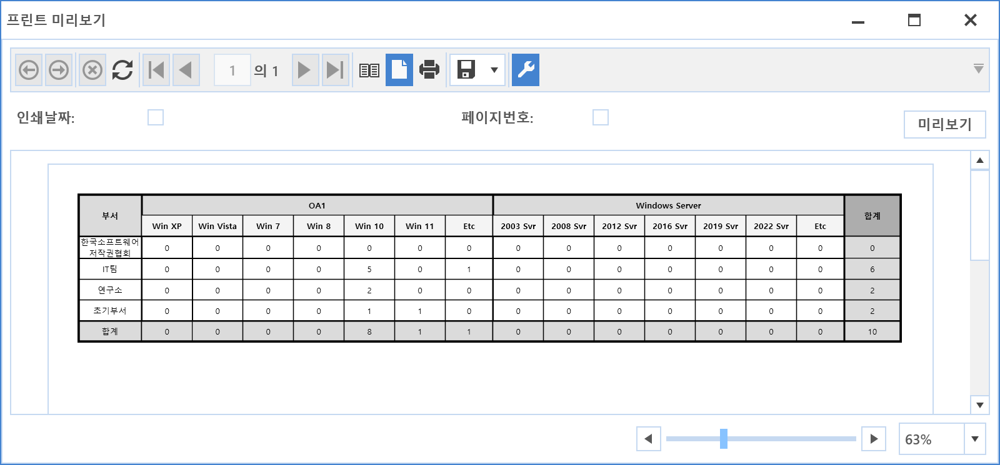

9-1-1. 리포트
9-1-1. 리포트
Source: https://www.sweeper.or.kr/etc/manual/9-1-1.html
9-1-1. 리포트


일반정보, 소프트웨어, 자산으로 분류되는 보고서를 출력할 수 있으며, 보고서 이름에 맞는 내용으로 출력이 가능합니다.
화면 출력 후 다양한 파일 포맷으로 저장할 수 있습니다.

보고서출력 방법
샘플로 위 캡쳐된 화면을 기준으로 설명합니다.
- 부서를 선택합니다.
- 장기미사용 정보를 포함할 것인지 선택합니다.
- 보고서 버튼을 클릭합니다.
-
보고서 출력화면이 팝업됩니다.
 -
내용을 확인 합니다.
- 필요에 따라 화면 상단의 저장 버튼을 클릭하여 Excel 포멧을 PC에 저장합니다.

엑셀내보내기
데이터가 많은 경우에 엑셀로 바로 출력하는 기능입니다. (미리보기 지원하지 않습니다.)
© Copyright SWeeper Inc.. All Rights Reserved